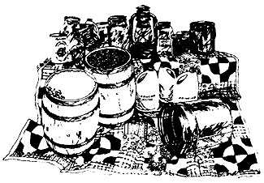

MOTHER's readers won't survive long if they take the advice in "Prepare Now for Survival" (MOTHER NO. 29).
The author recommends storing grain with diatomaceous earth "from a pool supply firm". Don't do it! Diatomaceous earth is prepared for use in pool filters by a heat treatment which changes its molecular structure to a form of silica. The sharp silica spikes readily pierce the bodies of insects and their larvae . . . also human intestines Pet animals "dusted carefully" with this product would lose their lives along with their fleas.
Kris Torrey's suggestion is valid, however, for the natural, untreated form of diatomaceous earth. Its carbonaceous molecular structure is deadly to insects but safe for consumption by humans, dogs, cats and chickens. When mixed with chicken-feed, for instance, this substance passes unchanged through the bird's digestive tract and is deposited in the feces . . . where it then kills the flies and larvae that attempt to breed in the waste. It works.
Untreated diatomaceous earth, I'm sorry to say, does cost 571 per pound at our local natural food store . . . but is much cheaper bought by the hundredweight.
Joanne Ross
Nevada City, Calif.
Many thanks, Joanne, for passing on this warning. Until we have more information on the whole question, diatomaceous-earth products should definitely be used only as directed on the packages in which they're shipped.
Perma-Guard Corporation, 1701 E. Elwood St., Phoenix, Ariz. 85050, manufactures diatomite preparations in various forms, including garden and household insecticides and a dusting powder for animals. I've consulted J. Mullin, Nurseryman , 1173 Doylestown Pike, Quakertown, Pa. 18951 (a distributor of Perma-Guard products), and received his assurance that these items are perfectly safe if used as directed. Mr. Mullin also mentioned that he ships large quantities of Fossil Flour-a diatomaceous additive for livestock feed-to dairymen, kennel owners and many other customers who find it an excellent method of pest control.
Readers who want to experiment with diatomaceous earth-in its harmless forms only, of course-will find a list of additional uses in the following letter from Kris Torrey.-MOTHER.
Since MOTHER has received many inquiries about diatomaceous earth (mentioned in my article "Prepare Now for Survival", MOTHER NO. 29), I'd like to share some additional information on the subject.
Diatomaceous earth, or diatomite, is an organic miracle. It's composed of millions of skeletons of marine algae and appears white and powdery like baking soda, but a bit finer. I first discovered it a year ago through an article entitled "The Livestock Feed Idea that Stops Flies" (Organic Gardening and Farming, October 1973) . . . and since that time I've found many more uses than the author, Marion Wilbur, listed.
Besides feeding diatomite to chickens, goats, dogs, horses, etc., as a means of controlling flies attracted to their droppings, I've spread it with livestock bedding material and dusted it on hen roosts and in nest boxes. I've also applied it to rosebushes and artichoke plants to discourage aphids. Be forewarned: The dust kills praying mantises and ladybugs too . . . and it's not a good idea to get it in your eyes, especially if you wear contact lenses.
In addition, my friends and I have used diatomaceous earth in cat litter pans, on dogs and cats as flea powder and in rugs for the same purpose. The powder controls flies and odor in outhouses, deodorizes drains, prevents insect activity in stored wheat (whether in sealed or unsealed containers) and kills ants in their hills and slugs in the garden. And it comes in handy for all sorts of other purposes: as scouring powder, to cover the bottoms of birdcages or tuck away in potato bins, as a shoe deodorizer and as a moth preventer in clothing storage areas.
Here are some uses we haven't tried: crab and bedbug cure, dry shampoo, ashtray deodorizer (no one smokes), kitchen grease-fire extinguisher and insecticide dust for fruit trees.
For small jobs, the powder can be applied successfully from a can with a soft, round, clean, dry paintbrush, or from a sack of loose-weave material used as a rosin bag. One friend made an effective atomizer from a plastic squeeze bottle held at the proper angle . . . it's good for dusting large areas like gardens and rugs.
Hope this helps someone.
Kris Torrey
LaVerne, Calif.
|
 |
|
|